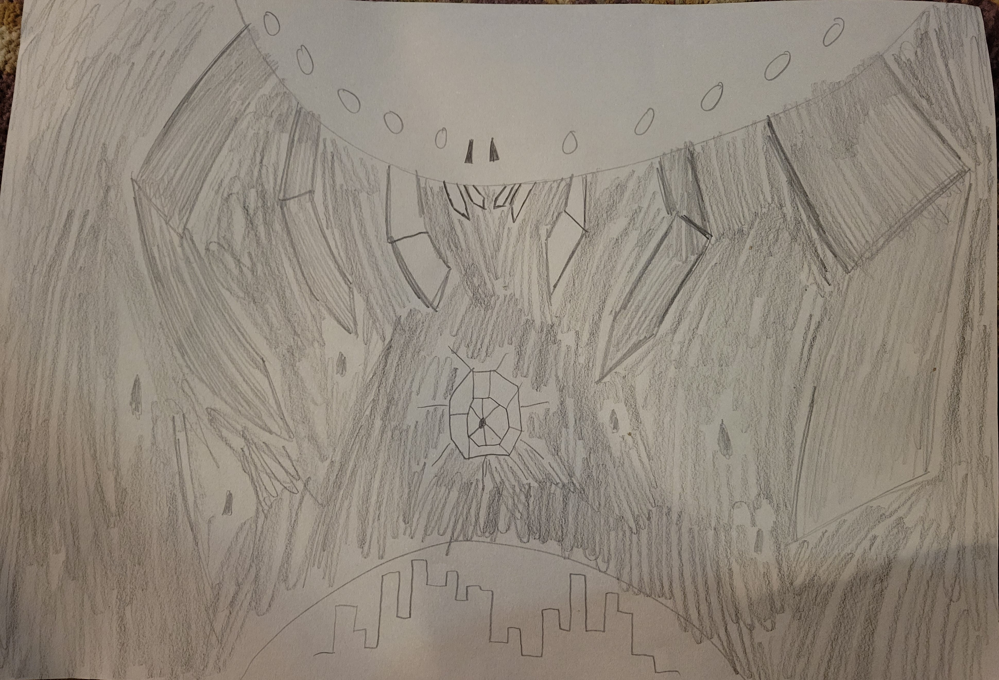
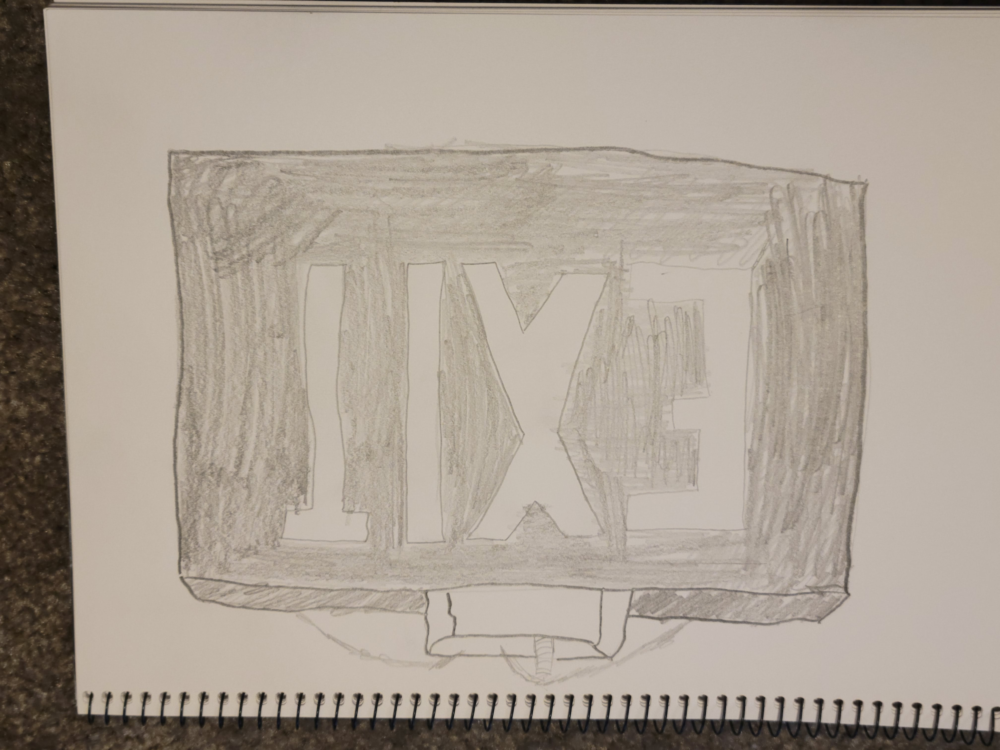
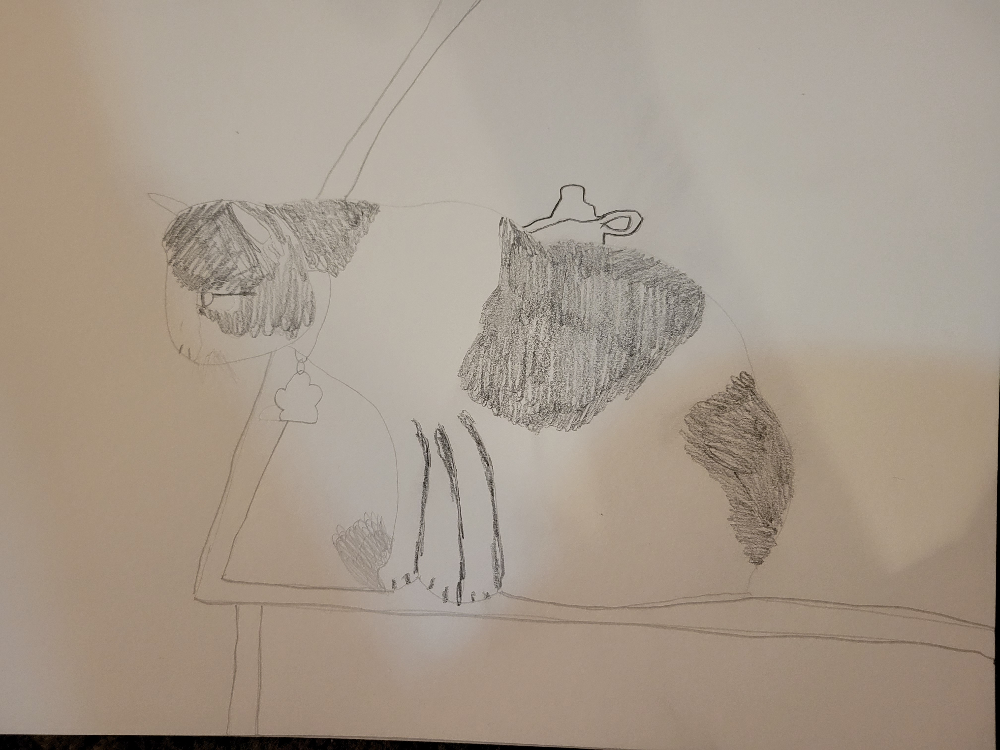

This charcoal drawing was made in collective with numerous other drawings by other artists. Sat around a center piece of random objects in a chatoic structure each of us drew a different section of the set up. I chose to focus on a plastic fish that was laying in some sort of cup thing, I honestly don't know what it was. Also, I am in possession of that plastic fish and another just like it.
Prompted with drawing something scary, I decided to combine several of my biggest fears together to inspire this drawing. The creature at the top was made to resemble a spider, my absolute biggest fear ever, followed by a fear of the vastness of space and heights in general. All in all, it was made in a chaotic nature to get a sense of unease to follow.
Made kind of as a joke, I was tasked with drawing something I am own. Now, own would be a generous term, but I am certainly in possession of this exit sign. It sits above my desk in my room, and I worked to make sure I got proportions as acurate as possible.
One of my first attempts at drawing something other than an inanimate object or a background, I decided to draw one of my brother's cats. I took a picture of Godzilla, the cat, sitting on a table, and sketched her as practice.